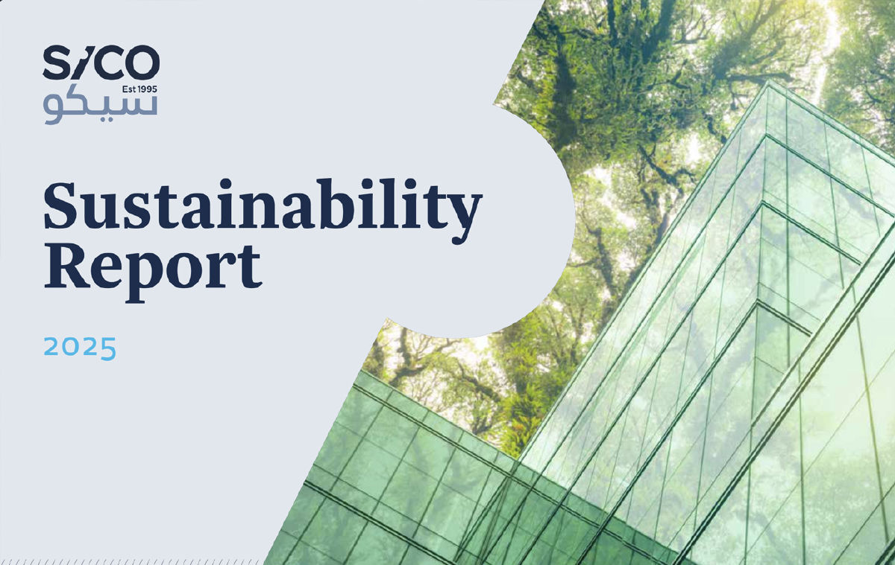
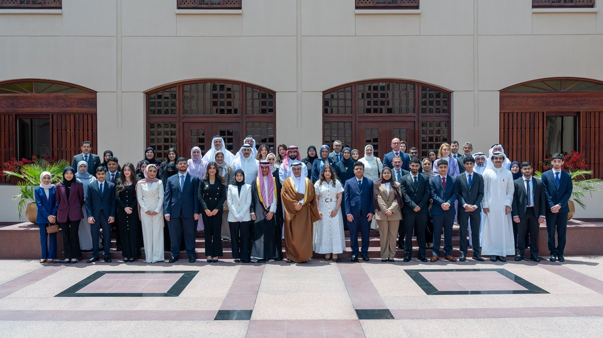
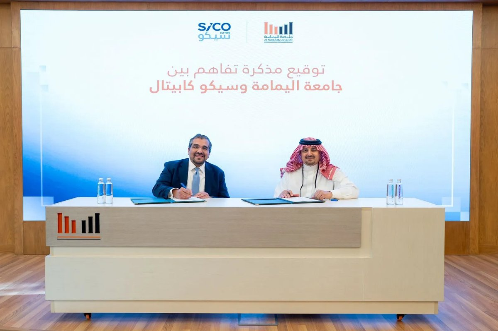
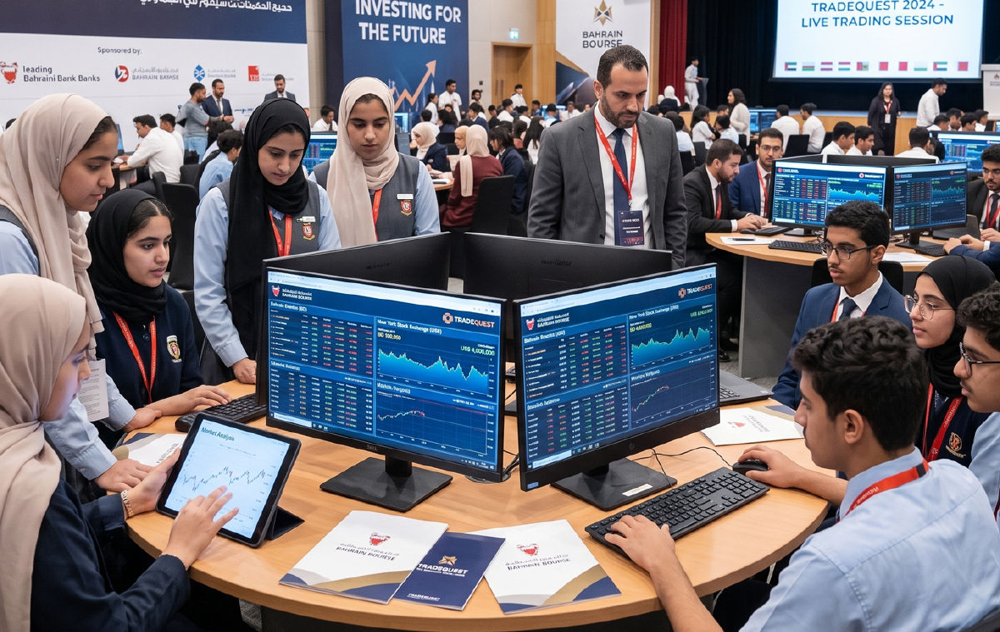
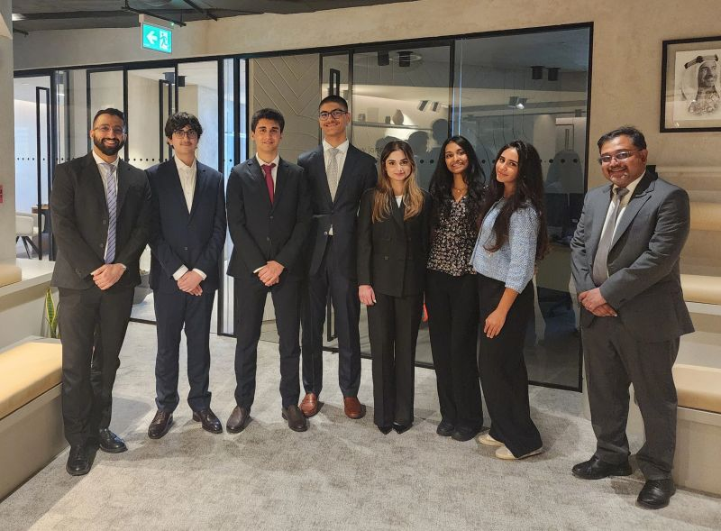
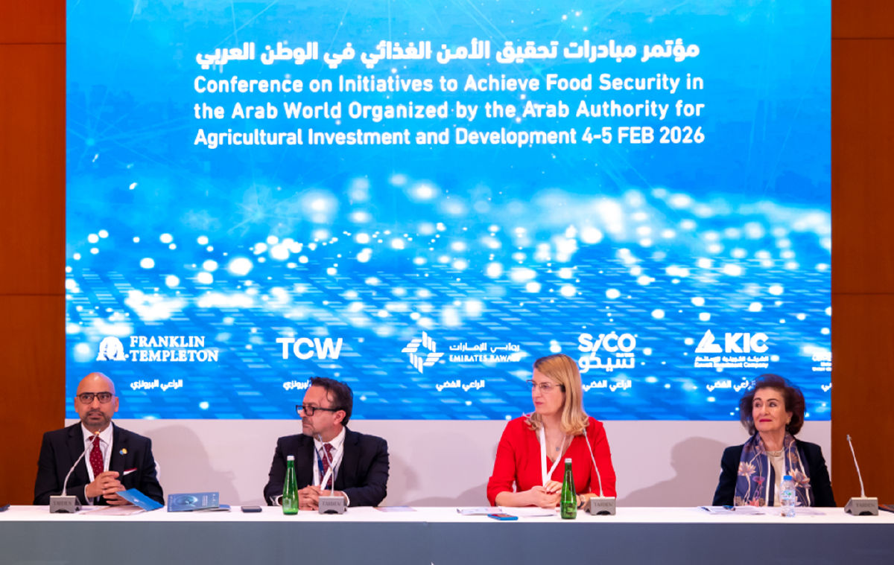

SICO Releases 2025 Sustainability Report
SICO’s 2025 Sustainability Report marks a step forward in how the Group measures and manages its sustainability impact. During the year, SICO completed its first financed emissions assessment, covering 85.75% of the Bank’s investment portfolio, and conducted a baseline climate risk assessment of its proprietary portfolio. ESG oversight was formalized at Board level, while average training hours per employee more than tripled and female representation reached 46% of the workforce.
Read the full report here.

SICO Sponsors Crown Prince’s International Scholarship Program (CPISP)
SICO continued its support for the Crown Prince’s International Scholarship Program (CPISP), a partnership spanning more than two decades. Established by HRH Prince Salman bin Hamad Al Khalifa, Crown Prince and Prime Minister of the Kingdom of Bahrain, the program enables high-potential Bahraini students to pursue higher education at leading international institutions, funded by the Crown Prince alongside local and international sponsors. SICO has supported more than 195 Bahraini scholars to date, reflecting its long-term role in developing national talent.

SICO Capital and Al Yamamah University Sign MoU to Support Talent Development
On the sidelines of the 2026 Al Yamamah Expo Career Fair, SICO Capital signed a Memorandum of Understanding (MoU) with Al Yamamah University aimed at enhancing career development and investment access. The agreement was signed by Mr. Wissam Haddad, CEO of SICO Capital, and Mr. Obaid Al-Mutairi, Vice President for Graduate Studies and Research at Al Yamamah University. It establishes a framework for cooperation focused on career opportunities and cooperative training programs for university students, alongside practical exposure to financial markets and the investment industry, and also opens dedicated investment channels for university employees through SICO Capital’s expertise. The collaboration reflects both institutions’ commitment to supporting local talent and strengthening links between the private sector and academia.

SICO Continues Support for TradeQuest
SICO continued its sponsorship of TradeQuest, Bahrain Bourse’s financial simulation program for school and university students. The 2025-2026 edition brought together 240 students from 20 schools and 10 universities, supported by 38 investment advisors, to manage virtual portfolios of local and international equities. Participants gained practical experience of market analysis and portfolio management, while working alongside advisors from across the industry.

SICO Hosts Students for Job Shadowing Experience
SICO welcomed students from St Christopher’s School, the American School of Bahrain (ASB), and Ibn Khuldoon National School (IKNS) for a job shadowing experience across the Group. The Internal Audit team introduced participants to various aspects of the function, including the three lines of defense model and audit planning, while other departments offered exposure to investment banking, asset management, brokerage, research, and corporate functions. The program forms part of SICO’s ongoing commitment to developing Bahrain’s future talent.

SICO Supports the AAAID Conference 2026
SICO supported the AAAID Conference 2026, held in February under the theme “Achieving Sustainable Arab Food Security through Agricultural Innovation and Investment.” Organized by the Arab Authority for Agricultural Investment and Development, the conference convened researchers, policymakers, industry leaders, and investors to address challenges facing the regional agricultural sector. SICO’s sponsorship builds on the Letter of Intent signed with AAAID in 2025 and reflects the Group’s commitment to supporting initiatives that advance sustainable development across the Arab region.
